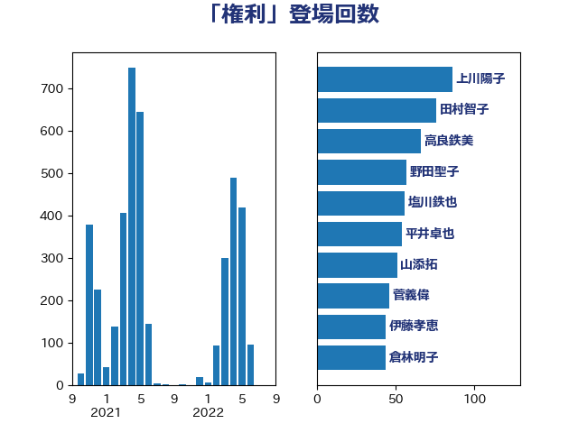

単語「権利」

| 上川陽子 | 自由民主党 | 86 回 |
| 田村智子 | 日本共産党 | 76 回 |
| 高良鉄美 | 無所属 | 66 回 |
| 野田聖子 | 自由民主党 | 57 回 |
| 塩川鉄也 | 日本共産党 | 56 回 |
| 平井卓也 | 自由民主党 | 54 回 |
| 山添拓 | 日本共産党 | 51 回 |
| 菅義偉 | 自由民主党 | 46 回 |
| 伊藤孝恵 | 国民民主党 | 44 回 |
| 倉林明子 | 日本共産党 | 44 回 |
| 萩生田光一 | 自由民主党 | 43 回 |
| 田村憲久 | 自由民主党 | 41 回 |
| 小西洋之 | 立憲民主党 | 37 回 |
| 串田誠一 | 日本維新の会 | 36 回 |
| 古川禎久 | 自由民主党 | 36 回 |
| 玉木雄一郎 | 国民民主党 | 36 回 |
| 後藤祐一 | 立憲民主党 | 29 回 |
| 川田龍平 | 立憲民主党 | 28 回 |
| 福島みずほ | 社会民主党 | 28 回 |
| 紙智子 | 日本共産党 | 28 回 |
| 本村伸子 | 日本共産党 | 27 回 |
| 林芳正 | 自由民主党 | 27 回 |
| 西村康稔 | 自由民主党 | 27 回 |
| 川合孝典 | 国民民主党 | 26 回 |
| 國重徹 | 公明党 | 24 回 |
| 岸田文雄 | 自由民主党 | 23 回 |
| 梶山弘志 | 自由民主党 | 23 回 |
| 加藤勝信 | 自由民主党 | 22 回 |
| 安江伸夫 | 公明党 | 22 回 |
| 山田勝彦 | 立憲民主党 | 22 回 |
| 石橋通宏 | 立憲民主党 | 22 回 |
| 三谷英弘 | 自由民主党 | 21 回 |
| 木原稔 | 自由民主党 | 21 回 |
| 中谷一馬 | 立憲民主党 | 19 回 |
| 井上哲士 | 日本共産党 | 19 回 |
| 横沢高徳 | 立憲民主党 | 19 回 |
| 阿部知子 | 立憲民主党 | 19 回 |
| 森山浩行 | 立憲民主党 | 18 回 |
| 秋野公造 | 公明党 | 18 回 |
| 舟山康江 | 国民民主党 | 18 回 |
| 吉良よし子 | 日本共産党 | 17 回 |
| 山田太郎 | 自由民主党 | 17 回 |
| 石垣のりこ | 立憲民主党 | 17 回 |
| 舩後靖彦 | れいわ新選組 | 17 回 |
| 藤田文武 | 日本維新の会 | 17 回 |
| 階猛 | 立憲民主党 | 17 回 |
| 柚木道義 | 立憲民主党 | 16 回 |
| 武田良太 | 自由民主党 | 16 回 |
| 浮島智子 | 公明党 | 16 回 |
| 音喜多駿 | 日本維新の会 | 16 回 |
| 須藤元気 | 無所属 | 16 回 |
| 古屋範子 | 公明党 | 15 回 |
| 田村貴昭 | 日本共産党 | 15 回 |
| 笠井亮 | 日本共産党 | 15 回 |
| 足立康史 | 日本維新の会 | 15 回 |
| 嘉田由紀子 | 無所属 | 14 回 |
| 寺田学 | 立憲民主党 | 14 回 |
| 松本尚 | 自由民主党 | 14 回 |
| 櫻井周 | 立憲民主党 | 14 回 |
| 赤池誠章 | 自由民主党 | 14 回 |
| 宮本徹 | 日本共産党 | 13 回 |
| 伊藤岳 | 日本共産党 | 12 回 |
| 大口善徳 | 公明党 | 12 回 |
| 小宮山泰子 | 立憲民主党 | 12 回 |
| 後藤茂之 | 自由民主党 | 12 回 |
| 堤かなめ | 立憲民主党 | 11 回 |
| 山井和則 | 立憲民主党 | 11 回 |
| 岡本あき子 | 立憲民主党 | 11 回 |
| 柴田巧 | 日本維新の会 | 11 回 |
| 篠原孝 | 立憲民主党 | 11 回 |
| 金子恭之 | 自由民主党 | 11 回 |
| 浜田聡 | NHK党 | 10 回 |
| 茂木敏充 | 自由民主党 | 10 回 |
| 中島克仁 | 立憲民主党 | 9 回 |
| 伊波洋一 | 無所属 | 9 回 |
| 北側一雄 | 公明党 | 9 回 |
| 古川俊治 | 自由民主党 | 9 回 |
| 吉田統彦 | 立憲民主党 | 9 回 |
| 城井崇 | 立憲民主党 | 9 回 |
| 宮本岳志 | 日本共産党 | 9 回 |
| 杉尾秀哉 | 立憲民主党 | 9 回 |
| 梅村みずほ | 日本維新の会 | 9 回 |
| 赤嶺政賢 | 日本共産党 | 9 回 |
| 鈴木義弘 | 国民民主党 | 9 回 |
| 伊藤孝江 | 公明党 | 8 回 |
| 塩村あやか | 立憲民主党 | 8 回 |
| 大石あきこ | れいわ新選組 | 8 回 |
| 岸信夫 | 自由民主党 | 8 回 |
| 打越さく良 | 立憲民主党 | 8 回 |
| 新垣邦男 | 立憲民主党 | 8 回 |
| 枝野幸男 | 立憲民主党 | 8 回 |
| 稲富修二 | 立憲民主党 | 8 回 |
| 野上浩太郎 | 自由民主党 | 8 回 |
| 高木かおり | 日本維新の会 | 8 回 |
| 高橋光男 | 公明党 | 8 回 |
| 大西健介 | 立憲民主党 | 7 回 |
| 斉藤鉄夫 | 公明党 | 7 回 |
| 櫛渕万里 | れいわ新選組 | 7 回 |
| 清水貴之 | 日本維新の会 | 7 回 |
| 田村まみ | 国民民主党 | 7 回 |
| 石川大我 | 立憲民主党 | 7 回 |
| 礒崎哲史 | 国民民主党 | 7 回 |
| 福田昭夫 | 立憲民主党 | 7 回 |
| 門山宏哲 | 自由民主党 | 7 回 |
| 佐々木さやか | 公明党 | 6 回 |
| 吉田久美子 | 公明党 | 6 回 |
| 吉田宣弘 | 公明党 | 6 回 |
| 山下貴司 | 自由民主党 | 6 回 |
| 平木大作 | 公明党 | 6 回 |
| 松沢成文 | 日本維新の会 | 6 回 |
| 森田俊和 | 立憲民主党 | 6 回 |
| 武井俊輔 | 自由民主党 | 6 回 |
| 田名部匡代 | 立憲民主党 | 6 回 |
| 逢沢一郎 | 自由民主党 | 6 回 |
| 道下大樹 | 立憲民主党 | 6 回 |
| 高橋千鶴子 | 日本共産党 | 6 回 |
| 三ッ林裕巳 | 自由民主党 | 5 回 |
| 中野洋昌 | 公明党 | 5 回 |
| 井上信治 | 自由民主党 | 5 回 |
| 吉川沙織 | 立憲民主党 | 5 回 |
| 坂本哲志 | 自由民主党 | 5 回 |
| 宮崎政久 | 自由民主党 | 5 回 |
| 山下芳生 | 日本共産党 | 5 回 |
| 山下雄平 | 自由民主党 | 5 回 |
| 早稲田ゆき | 立憲民主党 | 5 回 |
| 末松信介 | 自由民主党 | 5 回 |
| 東徹 | 日本維新の会 | 5 回 |
| 松原仁 | 立憲民主党 | 5 回 |
| 柳ヶ瀬裕文 | 日本維新の会 | 5 回 |
| 梅村聡 | 日本維新の会 | 5 回 |
| 河野義博 | 公明党 | 5 回 |
| 浅田均 | 日本維新の会 | 5 回 |
| 稲田朋美 | 自由民主党 | 5 回 |
| 竹谷とし子 | 公明党 | 5 回 |
| 葉梨康弘 | 自由民主党 | 5 回 |
| 下条みつ | 立憲民主党 | 4 回 |
| 前原誠司 | 国民民主党 | 4 回 |
| 大串博志 | 立憲民主党 | 4 回 |
| 宮内秀樹 | 自由民主党 | 4 回 |
| 小林鷹之 | 自由民主党 | 4 回 |
| 小野田紀美 | 自由民主党 | 4 回 |
| 山岸一生 | 立憲民主党 | 4 回 |
| 岩渕友 | 日本共産党 | 4 回 |
| 杉本和巳 | 日本維新の会 | 4 回 |
| 水岡俊一 | 立憲民主党 | 4 回 |
| 浅野哲 | 国民民主党 | 4 回 |
| 渡辺創 | 立憲民主党 | 4 回 |
| 輿水恵一 | 公明党 | 4 回 |
| 金子恵美 | 立憲民主党 | 4 回 |
| 鎌田さゆり | 立憲民主党 | 4 回 |
| 高野光二郎 | 自由民主党 | 4 回 |
| 上野賢一郎 | 自由民主党 | 3 回 |
| 伊佐進一 | 公明党 | 3 回 |
| 前川清成 | 日本維新の会 | 3 回 |
| 勝部賢志 | 立憲民主党 | 3 回 |
| 吉田はるみ | 立憲民主党 | 3 回 |
| 大塚耕平 | 国民民主党 | 3 回 |
| 大野敬太郎 | 自由民主党 | 3 回 |
| 小野泰輔 | 日本維新の会 | 3 回 |
| 山岡達丸 | 立憲民主党 | 3 回 |
| 山崎誠 | 立憲民主党 | 3 回 |
| 山本香苗 | 公明党 | 3 回 |
| 山田賢司 | 自由民主党 | 3 回 |
| 新藤義孝 | 自由民主党 | 3 回 |
| 早坂敦 | 日本維新の会 | 3 回 |
| 木村英子 | れいわ新選組 | 3 回 |
| 橋本岳 | 自由民主党 | 3 回 |
| 橋本聖子 | 無所属 | 3 回 |
| 池下卓 | 日本維新の会 | 3 回 |
| 泉健太 | 立憲民主党 | 3 回 |
| 津島淳 | 自由民主党 | 3 回 |
| 浜口誠 | 国民民主党 | 3 回 |
| 浦野靖人 | 日本維新の会 | 3 回 |
| 清水真人 | 自由民主党 | 3 回 |
| 熊谷裕人 | 立憲民主党 | 3 回 |
| 牧山ひろえ | 立憲民主党 | 3 回 |
| 石川博崇 | 公明党 | 3 回 |
| 磯崎仁彦 | 自由民主党 | 3 回 |
| 穂坂泰 | 自由民主党 | 3 回 |
| 重徳和彦 | 立憲民主党 | 3 回 |
| 鈴木俊一 | 自由民主党 | 3 回 |
| 青山大人 | 立憲民主党 | 3 回 |
| こやり隆史 | 自由民主党 | 2 回 |
| 三木圭恵 | 日本維新の会 | 2 回 |
| 上田清司 | 国民民主党 | 2 回 |
| 下野六太 | 公明党 | 2 回 |
| 中川正春 | 立憲民主党 | 2 回 |
| 丹羽秀樹 | 自由民主党 | 2 回 |
| 伴野豊 | 立憲民主党 | 2 回 |
| 勝目康 | 自由民主党 | 2 回 |
| 古川康 | 自由民主党 | 2 回 |
| 古賀友一郎 | 自由民主党 | 2 回 |
| 塩崎彰久 | 自由民主党 | 2 回 |
| 太田房江 | 自由民主党 | 2 回 |
| 守島正 | 日本維新の会 | 2 回 |
| 小池晃 | 日本共産党 | 2 回 |
| 小沼巧 | 立憲民主党 | 2 回 |
| 小泉進次郎 | 自由民主党 | 2 回 |
| 志位和夫 | 日本共産党 | 2 回 |
| 掘井健智 | 日本維新の会 | 2 回 |
| 斎藤アレックス | 国民民主党 | 2 回 |
| 森本真治 | 立憲民主党 | 2 回 |
| 武見敬三 | 自由民主党 | 2 回 |
| 武部新 | 自由民主党 | 2 回 |
| 深澤陽一 | 自由民主党 | 2 回 |
| 熊野正士 | 公明党 | 2 回 |
| 牧義夫 | 立憲民主党 | 2 回 |
| 猪口邦子 | 自由民主党 | 2 回 |
| 田所嘉徳 | 自由民主党 | 2 回 |
| 盛山正仁 | 自由民主党 | 2 回 |
| 矢倉克夫 | 公明党 | 2 回 |
| 石井苗子 | 日本維新の会 | 2 回 |
| 稲津久 | 公明党 | 2 回 |
| 穀田恵二 | 日本共産党 | 2 回 |
| 芳賀道也 | 国民民主党 | 2 回 |
| 藤井比早之 | 自由民主党 | 2 回 |
| 藤岡隆雄 | 立憲民主党 | 2 回 |
| 西村智奈美 | 立憲民主党 | 2 回 |
| 西田実仁 | 公明党 | 2 回 |
| 谷田川元 | 立憲民主党 | 2 回 |
| 豊田俊郎 | 自由民主党 | 2 回 |
| 酒井庸行 | 自由民主党 | 2 回 |
| 野田佳彦 | 立憲民主党 | 2 回 |
| 鈴木庸介 | 立憲民主党 | 2 回 |
| 関芳弘 | 自由民主党 | 2 回 |
| 青柳陽一郎 | 立憲民主党 | 2 回 |
| 鰐淵洋子 | 公明党 | 2 回 |
| 三原じゅん子 | 自由民主党 | 1 回 |
| 三宅伸吾 | 自由民主党 | 1 回 |
| 上月良祐 | 自由民主党 | 1 回 |
| 上野通子 | 自由民主党 | 1 回 |
| 下村博文 | 自由民主党 | 1 回 |
| 中村裕之 | 自由民主党 | 1 回 |
| 中野英幸 | 自由民主党 | 1 回 |
| 井出庸生 | 自由民主党 | 1 回 |
| 井林辰憲 | 自由民主党 | 1 回 |
| 仁木博文 | 無所属 | 1 回 |
| 伊藤渉 | 公明党 | 1 回 |
| 佐藤啓 | 自由民主党 | 1 回 |
| 佐藤英道 | 公明党 | 1 回 |
| 加田裕之 | 自由民主党 | 1 回 |
| 勝俣孝明 | 自由民主党 | 1 回 |
| 北神圭朗 | 無所属 | 1 回 |
| 古賀之士 | 立憲民主党 | 1 回 |
| 吉川赳 | 無所属 | 1 回 |
| 吉田とも代 | 日本維新の会 | 1 回 |
| 和田政宗 | 自由民主党 | 1 回 |
| 和田義明 | 自由民主党 | 1 回 |
| 坂本祐之輔 | 立憲民主党 | 1 回 |
| 塩田博昭 | 公明党 | 1 回 |
| 大家敏志 | 自由民主党 | 1 回 |
| 大島敦 | 立憲民主党 | 1 回 |
| 太栄志 | 立憲民主党 | 1 回 |
| 奥下剛光 | 日本維新の会 | 1 回 |
| 宮下一郎 | 自由民主党 | 1 回 |
| 宮崎雅夫 | 自由民主党 | 1 回 |
| 宮路拓馬 | 自由民主党 | 1 回 |
| 寺田静 | 無所属 | 1 回 |
| 尾辻秀久 | 無所属 | 1 回 |
| 山口那津男 | 公明党 | 1 回 |
| 山本太郎 | れいわ新選組 | 1 回 |
| 山谷えり子 | 自由民主党 | 1 回 |
| 岡田克也 | 立憲民主党 | 1 回 |
| 岸真紀子 | 立憲民主党 | 1 回 |
| 川崎ひでと | 自由民主党 | 1 回 |
| 平林晃 | 公明党 | 1 回 |
| 庄子賢一 | 公明党 | 1 回 |
| 徳永エリ | 立憲民主党 | 1 回 |
| 斎藤嘉隆 | 立憲民主党 | 1 回 |
| 有村治子 | 自由民主党 | 1 回 |
| 本田顕子 | 自由民主党 | 1 回 |
| 杉久武 | 公明党 | 1 回 |
| 杉田水脈 | 自由民主党 | 1 回 |
| 松山政司 | 自由民主党 | 1 回 |
| 松本剛明 | 自由民主党 | 1 回 |
| 森屋隆 | 立憲民主党 | 1 回 |
| 江島潔 | 自由民主党 | 1 回 |
| 池田佳隆 | 自由民主党 | 1 回 |
| 沢田良 | 日本維新の会 | 1 回 |
| 浜地雅一 | 公明党 | 1 回 |
| 湯原俊二 | 立憲民主党 | 1 回 |
| 牧原秀樹 | 自由民主党 | 1 回 |
| 牧島かれん | 自由民主党 | 1 回 |
| 田中健 | 国民民主党 | 1 回 |
| 石井章 | 日本維新の会 | 1 回 |
| 石川香織 | 立憲民主党 | 1 回 |
| 石破茂 | 自由民主党 | 1 回 |
| 福岡資麿 | 自由民主党 | 1 回 |
| 福島伸享 | 無所属 | 1 回 |
| 笠浩史 | 無所属 | 1 回 |
| 篠原豪 | 立憲民主党 | 1 回 |
| 美延映夫 | 日本維新の会 | 1 回 |
| 義家弘介 | 自由民主党 | 1 回 |
| 自見はなこ | 自由民主党 | 1 回 |
| 若宮健嗣 | 自由民主党 | 1 回 |
| 落合貴之 | 立憲民主党 | 1 回 |
| 藤原崇 | 自由民主党 | 1 回 |
| 藤巻健太 | 日本維新の会 | 1 回 |
| 西岡秀子 | 国民民主党 | 1 回 |
| 西銘恒三郎 | 自由民主党 | 1 回 |
| 谷合正明 | 公明党 | 1 回 |
| 赤澤亮正 | 自由民主党 | 1 回 |
| 赤羽一嘉 | 公明党 | 1 回 |
| 足立敏之 | 自由民主党 | 1 回 |
| 辻元清美 | 立憲民主党 | 1 回 |
| 遠藤良太 | 日本維新の会 | 1 回 |
| 野中厚 | 自由民主党 | 1 回 |
| 鈴木敦 | 国民民主党 | 1 回 |
| 鈴木英敬 | 自由民主党 | 1 回 |
| 鈴木貴子 | 自由民主党 | 1 回 |
| 鈴木馨祐 | 自由民主党 | 1 回 |
| 阿達雅志 | 自由民主党 | 1 回 |
| 青山繁晴 | 自由民主党 | 1 回 |
| 青柳仁士 | 日本維新の会 | 1 回 |
| 高橋克法 | 自由民主党 | 1 回 |
| 鬼木誠 | 立憲民主党 | 1 回 |
| 麻生太郎 | 自由民主党 | 1 回 |